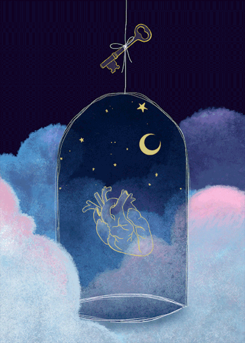

|  |
Dentro del sueño, existen fases, hay cinco y se dividen de esta forma:
FASE 1:Es lo que se conoce comúnmente como sueño ligero, el momento en el que el comienzas a sentirte "somnoliento" es decir,
tus parpados se empiezan a cerrar e incluso hay relajación muscular. Esta fase constituye del 1-5% del sueño.
FASE 2:En esta fase, el movimiento de los ojos se detiene, también las ondas cerebrales reducen su velocidad. Esta fase constituye el 45-50% del sueño.
FASE 3:Aparecen ondas cerebrales llamadas ondas delta, que son extremadamente lentas. Esta fase constituye del 4-6% del sueño.
FASE 4:Es la etapa del sueño profundo , en esta y en la tercer etapa, es muy difícil despertar a la persona, las personas que
se despiertan durante esta etapa, suelen sentirse desorientadas durante un lapso de tiempo. Esta fase constituye del 12-15% del sueño.
FASE 5:Conocida como la etapa REM que en español significa "Movimiento Ocular Rápido", aquí la respiración se acelera,
la frecuencia cardiaca aumenta y en el caso de los hombres hay erecciones en el pene. Lo más importante de esta fase es que en ella ocurren
los sueños. Constituye del 20-25% del sueño. |